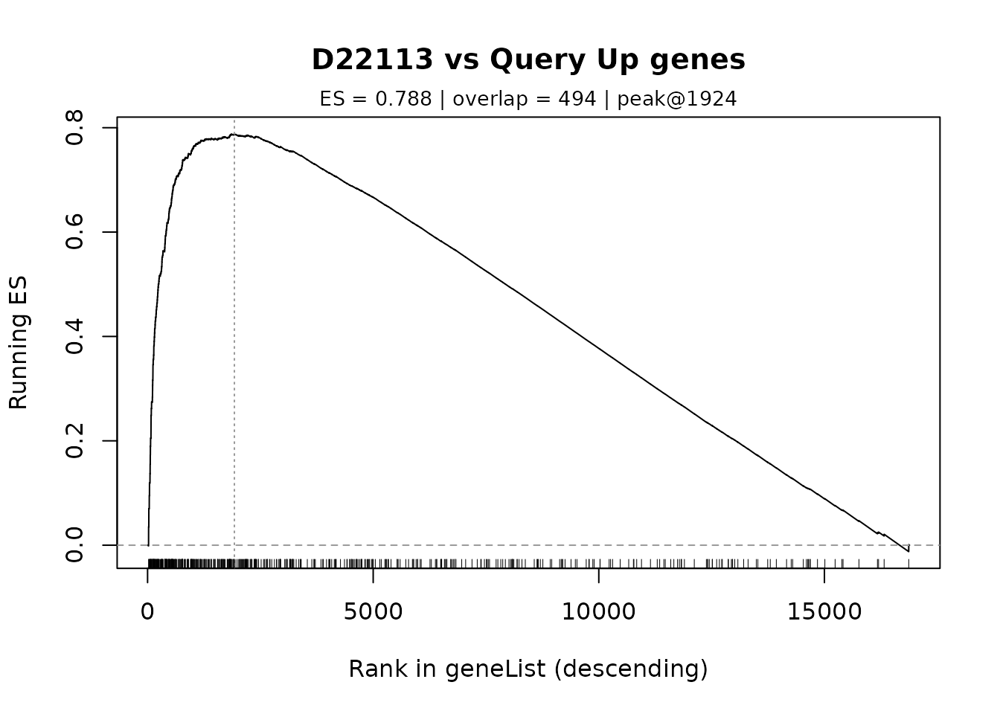
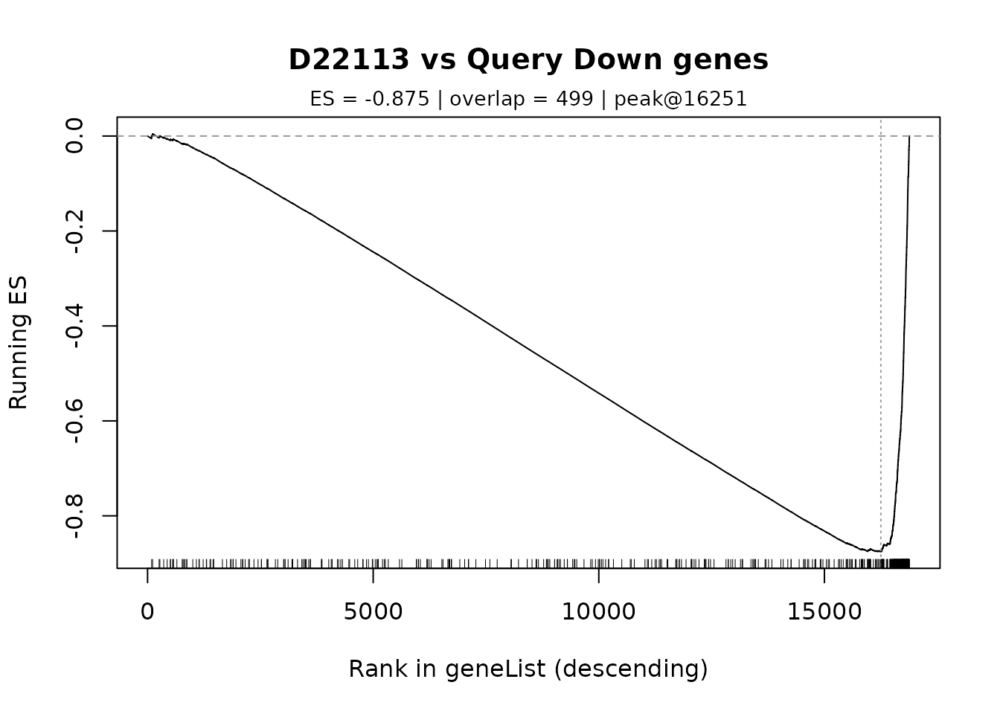

Overview
When you have a reference perturbation signature (with both up-regulated and down-regulated genes), you can search for other perturbations that produce similar or opposite transcriptomic effects. This is the classic Connectivity Map (cMAP) approach.
GPSA supports two methods for selecting query genes: 1. Fixed selection: Take top N and bottom N genes by logFC 2. Adaptive selection: Use energy threshold to determine optimal gene counts
Setup
library(GPSA)
# Load database in memory mode
db <- gpsa_load_db(preload_Z = TRUE, verbose = TRUE)
#> Preloading /Z into memory ...
#> Preloaded /Z (1062.9 MB) into RAM; subsequent queries avoid disk I/O.
#> Loaded DB: 19613 genes x 7103 signatures; Z_definition=cmap_rankZ_qnormMethod 1: Fixed Gene Selection
The classic approach uses a fixed number of genes from each tail of the expression distribution.
Extract a Reference Signature
# Choose a reference signature (e.g., an ESR1 perturbation)
# First, let's find an ESR1-related signature
esr1_sigs <- db$meta[grep("ESR1", db$meta$pbgene, ignore.case = TRUE), ]
if (nrow(esr1_sigs) > 0) {
sig_ref <- esr1_sigs$signature_id[1]
} else {
sig_ref <- db$sigs[1] # Fallback to first signature
}
message(sprintf("Using reference signature: %s", sig_ref))
#> Using reference signature: D20261
# Get the logFC vector
gl_ref <- gpsa_get_signature(db, sig_ref, dataset = "logFC")
# Preview the distribution
summary(gl_ref)
#> Min. 1st Qu. Median Mean 3rd Qu. Max. NA's
#> -3.6111 -0.1517 0.0022 -0.0081 0.1315 2.6259 2267Create Up/Down Query (Default: 500 each)
# Create query with top 500 up-regulated and bottom 500 down-regulated genes
query_ud <- gpsa_make_updown_query(gl_ref, n_each = 500)
message(sprintf("Up genes: %d", length(query_ud$Up$genes)))
#> Up genes: 500
message(sprintf("Down genes: %d", length(query_ud$Down$genes)))
#> Down genes: 500
# Preview the query structure
str(query_ud)
#> List of 2
#> $ Up :List of 3
#> ..$ genes : chr [1:500] "MCAM" "KRT17" "FAM131B" "KRT20" ...
#> ..$ sign : num 1
#> ..$ weight: num 1
#> $ Down:List of 3
#> ..$ genes : chr [1:500] "FMN1" "IL17RE" "FDPS" "BLVRB" ...
#> ..$ sign : num -1
#> ..$ weight: num 1Run the Search
out_ud <- gpsa_search(db, query_ud, return_components = TRUE)
# Check if reference ranks highly (should be near top)
self_rank <- gpsa_rank_in(out_ud$res, sig_ref)
message(sprintf("Reference signature self-rank: %d", self_rank))
#> Reference signature self-rank: 1
# Top 10 most similar perturbations
message("=== Top 10 Most Similar ===")
#> === Top 10 Most Similar ===
print(head(out_ud$res[, c("signature_id", "pbgene", "CellLineName",
"Score", "tau", "FDR_rank")], 10))
#> signature_id pbgene CellLineName Score tau FDR_rank
#> 1049 D20261 ESR1 MCF7 104.21237 99.98592 0.5000000
#> 2708 D22113 MDM2 MCF7 45.26737 99.95776 0.7500000
#> 1934 D21258 RB1 MCF7 42.88116 99.92961 0.8333333
#> 2630 D22027 PHF20 MCF7 41.28908 99.90145 0.8750000
#> 992 D20179 TRPS1 MCF7 38.83751 99.87329 0.9000000
#> 2112 D21456 GATA3 MCF7 38.81446 99.84514 0.9166667
#> 6243 D27282 THUMPD3 A549 38.51017 99.81698 0.9285714
#> 2709 D22114 AR 22Rv1 37.92389 99.78882 0.9375000
#> 3718 D23452 TRIM46 MCF7 37.88724 99.76066 0.9444444
#> 3567 D23236 RAC1 MCF7 37.05568 99.73251 0.9500000
# Bottom 10 most opposite perturbations
message("=== Top 10 Most Opposite ===")
#> === Top 10 Most Opposite ===
print(tail(out_ud$res[, c("signature_id", "pbgene", "CellLineName",
"Score", "tau", "FDR_rank")], 10))
#> signature_id pbgene CellLineName Score tau FDR_rank
#> 2651 D22051 SLIRP LNCaP clone FGC -30.11066 -99.73251 0.9500000
#> 2652 D22052 SLIRP LNCaP clone FGC -30.22272 -99.76066 0.9444444
#> 2293 D21655 CPT1A LNCaP C4-2 -31.49598 -99.78882 0.9375000
#> 5172 D25805 MUC1 Ca Ski -31.49624 -99.81698 0.9285714
#> 2328 D21694 NEDD9 VCaP -32.84082 -99.84514 0.9166667
#> 3267 D22816 TFAP2A HCT 116 -34.05805 -99.87329 0.9000000
#> 2873 D22289 SPIN1 94T778 -35.05823 -99.90145 0.8750000
#> 4589 D24853 NCSTN HaCaT -35.18847 -99.92961 0.8333333
#> 4433 D24586 MXD4 NHEK -35.53860 -99.95776 0.7500000
#> 4838 D25279 ADGRG6 iPSCs -35.81799 -99.98592 0.5000000Exclude Self to Find Similar Others
# Find the most similar perturbation that isn't the reference itself
top_other <- out_ud$res[out_ud$res$signature_id != sig_ref, ][1, ]
message("=== Most Similar Other Perturbation ===")
#> === Most Similar Other Perturbation ===
print(top_other[, c("signature_id", "pbgene", "CellLineName", "Score", "tau")])
#> signature_id pbgene CellLineName Score tau
#> 2708 D22113 MDM2 MCF7 45.26737 99.95776Method 2: Adaptive Gene Selection
Instead of arbitrary cutoffs (500 genes), use energy-based thresholding to automatically determine how many genes capture a given fraction of the signal.
Adaptive Selection with Energy Threshold
# Select genes that capture 90% of the signal energy
q_adaptive <- gpsa_make_updown_query_adaptive(
gl_ref,
eta = 0.90, # Capture 90% of energy
min_n = 200, # At least 200 genes per direction
max_n = 2000 # At most 2000 genes per direction
)
# View selection information
message("=== Adaptive Selection Info ===")
#> === Adaptive Selection Info ===
print(q_adaptive$.info)
#> $n_up
#> [1] 2000
#>
#> $n_down
#> [1] 2000
#>
#> $eta
#> [1] 0.9
# The selected gene counts may differ from 500
message(sprintf("Adaptive Up genes: %d", length(q_adaptive$Up$genes)))
#> Adaptive Up genes: 2000
message(sprintf("Adaptive Down genes: %d", length(q_adaptive$Down$genes)))
#> Adaptive Down genes: 2000Run Search with Adaptive Query
# Note: Use only Up and Down, not the .info metadata
out_adaptive <- gpsa_search(db, q_adaptive[c("Up", "Down")],
return_components = TRUE)
# Compare self-rank with fixed approach
self_rank_ad <- gpsa_rank_in(out_adaptive$res, sig_ref)
message(sprintf("Adaptive self-rank: %d (vs fixed: %d)", self_rank_ad, self_rank))
#> Adaptive self-rank: 1 (vs fixed: 1)Examining Channel-level Scores
GPSA computes separate enrichment scores for the Up and Down channels. These can reveal whether a hit matches both directions or just one.
# Attach per-channel scores to results
res_channels <- gpsa_attach_channel_scores(
out_ud$res,
out_ud$NES_raw,
out_ud$NES_signed
)
# View channel breakdown
message("=== Top 5 with Channel Scores ===")
#> === Top 5 with Channel Scores ===
print(head(res_channels[, c("signature_id", "pbgene", "Score",
"Up_raw", "Down_raw",
"Up_signed", "Down_signed")], 5))
#> signature_id pbgene Score Up_raw Down_raw Up_signed Down_signed
#> 1049 D20261 ESR1 104.21237 52.10618 -52.10618 52.10618 52.10618
#> 2708 D22113 MDM2 45.26737 21.56475 -23.70262 21.56475 23.70262
#> 1934 D21258 RB1 42.88116 20.79812 -22.08304 20.79812 22.08304
#> 2630 D22027 PHF20 41.28908 16.56805 -24.72102 16.56805 24.72102
#> 992 D20179 TRPS1 38.83751 14.45522 -24.38229 14.45522 24.38229Interpreting Channel Scores
| Score | Meaning |
|---|---|
Up_raw |
Raw NES for Up channel (unsigned) |
Down_raw |
Raw NES for Down channel (unsigned) |
Up_signed |
Signed NES for Up channel (+/- indicates direction match) |
Down_signed |
Signed NES for Down channel (+/- indicates direction match) |
A hit with both Up_signed > 0 AND
Down_signed > 0 shows concordant regulation in both
directions (true phenocopy).
Dual-mode Scoring: Phenocopy vs Discovery
GPSA distinguishes two types of hits:
- Phenocopy (Score_bi): Both channels must show the expected direction (min of signed scores)
- Discovery (Score_uni): At least one channel shows strong signal (max of signed scores)
out_modes <- gpsa_postprocess_modes(
out_ud,
attach_channel_cols = TRUE,
p_mode = "norm",
filter_positive = TRUE
)
# Phenocopy hits: strict matches where both channels agree
message("=== Phenocopy Mode Top 10 (Score_bi) ===")
#> === Phenocopy Mode Top 10 (Score_bi) ===
print(head(out_modes$res_similarity[, c("signature_id", "pbgene",
"Score_bi", "Score", "Score_uni",
"Balance", "Driver")], 10))
#> signature_id pbgene Score_bi Score Score_uni Balance Driver
#> 1049 D20261 ESR1 52.10618 104.21237 52.10618 1.0000000 Up
#> 2708 D22113 MDM2 21.56475 45.26737 23.70262 0.9098047 Down
#> 1934 D21258 RB1 20.79812 42.88116 22.08304 0.9418140 Down
#> 1695 D21003 LATS1 17.13308 35.59559 18.46251 0.9279930 Up
#> 6243 D27282 THUMPD3 16.74555 38.51017 21.76462 0.7693934 Down
#> 2112 D21456 GATA3 16.57333 38.81446 22.24113 0.7451659 Down
#> 2630 D22027 PHF20 16.56805 41.28908 24.72102 0.6702010 Down
#> 6106 D27099 PPARD 16.47686 34.36144 17.88458 0.9212883 Down
#> 2319 D21683 ZBP1 16.03998 36.38926 20.34928 0.7882333 Down
#> 4464 D24653 TFAP2C 15.82377 32.69199 16.86822 0.9380816 Up
# Discovery hits: strong in at least one channel
message("=== Discovery Mode Top 10 (Score_uni) ===")
#> === Discovery Mode Top 10 (Score_uni) ===
print(head(out_modes$res_discovery[, c("signature_id", "pbgene",
"Score_uni", "Score", "Score_bi",
"Balance", "Driver")], 10))
#> signature_id pbgene Score_uni Score Score_bi Balance Driver
#> 1049 D20261 ESR1 52.10618 104.21237 52.1061845 1.00000000 Up
#> 3592 D23270 PIEZO1 27.08636 32.61008 5.5237140 0.20392970 Down
#> 1117 D20335 HOXB13 26.61353 36.11262 9.4990913 0.35692718 Down
#> 6829 D28013 RRN3 25.39288 32.86262 7.4697429 0.29416681 Down
#> 2457 D21832 ERBB2 25.01816 32.11665 7.0984885 0.28373340 Down
#> 3408 D23025 BUB3 24.82119 23.83612 -0.9850752 -0.03968686 Down
#> 2630 D22027 PHF20 24.72102 41.28908 16.5680541 0.67020101 Down
#> 6084 D27065 TP53 24.71115 32.64911 7.9379617 0.32122996 Down
#> 992 D20179 TRPS1 24.38229 38.83751 14.4552218 0.59285735 Down
#> 1871 D21191 NR2F2 24.34140 30.18910 5.8476938 0.24023650 DownInterpreting Dual-mode Results
| Column | Description |
|---|---|
Score_bi |
Phenocopy score: min(Up_signed, Down_signed) |
Score_uni |
Discovery score: max(Up_signed, Down_signed) |
Balance |
Ratio Score_bi / Score_uni (1 = perfectly balanced) |
Driver |
Which channel dominates (“Up”, “Down”, or “Balanced”) |
Use cases: - High Score_bi + High
Balance: True phenocopy, both directions match - High
Score_uni + Low Balance: One-sided hit, only
one direction matches - Driver column tells you which
channel is driving the score
GSEA Validation
Validate hits by examining the running enrichment:
# Get logFC for a top hit
candidate <- out_ud$res$signature_id[2] # Second-ranked hit
gl_cand <- gpsa_get_signature(db, candidate, dataset = "logFC")
# Plot enrichment for Up genes
gpsa_plot_gsea(gl_cand, query_ud$Up$genes,
main = paste0(candidate, " vs Query Up genes"))
GSEA validation plots for a top hit showing Up and Down gene enrichment.
# Plot enrichment for Down genes
gpsa_plot_gsea(gl_cand, query_ud$Down$genes,
main = paste0(candidate, " vs Query Down genes"))
GSEA validation plots for a top hit showing Up and Down gene enrichment.
Best Practices
-
Start with fixed selection
(
n_each = 500) for initial exploration - Use adaptive selection when you want interpretable, energy-based cutoffs
- Always examine channel scores to understand what’s driving the hit
- Use dual-mode scoring when you need to distinguish phenocopy from discovery
- Validate top hits with GSEA plots to confirm biological relevance
Summary
| Approach | Function | When to Use |
|---|---|---|
| Fixed 500 | gpsa_make_updown_query(gl, n_each = 500) |
Quick exploration, standard cMAP |
| Fixed custom | gpsa_make_updown_query(gl, n_each = 300) |
Smaller/larger gene sets |
| Adaptive | gpsa_make_updown_query_adaptive(gl, eta = 0.90) |
Interpretable cutoffs |
Session Info
sessionInfo()
#> R version 4.3.2 (2023-10-31)
#> Platform: x86_64-pc-linux-gnu (64-bit)
#> Running under: Ubuntu 22.04.2 LTS
#>
#> Matrix products: default
#> BLAS: /usr/lib/x86_64-linux-gnu/openblas-pthread/libblas.so.3
#> LAPACK: /usr/lib/x86_64-linux-gnu/openblas-pthread/libopenblasp-r0.3.20.so; LAPACK version 3.10.0
#>
#> locale:
#> [1] LC_CTYPE=C.UTF-8 LC_NUMERIC=C LC_TIME=C.UTF-8
#> [4] LC_COLLATE=C.UTF-8 LC_MONETARY=C.UTF-8 LC_MESSAGES=C.UTF-8
#> [7] LC_PAPER=C.UTF-8 LC_NAME=C LC_ADDRESS=C
#> [10] LC_TELEPHONE=C LC_MEASUREMENT=C.UTF-8 LC_IDENTIFICATION=C
#>
#> time zone: Asia/Shanghai
#> tzcode source: system (glibc)
#>
#> attached base packages:
#> [1] stats graphics grDevices utils datasets methods base
#>
#> other attached packages:
#> [1] GPSA_0.1.0
#>
#> loaded via a namespace (and not attached):
#> [1] vctrs_0.6.5 cli_3.6.2 knitr_1.45
#> [4] rlang_1.1.2 xfun_0.41 highr_0.10
#> [7] stringi_1.8.3 purrr_1.0.2 textshaping_0.3.7
#> [10] jsonlite_1.8.8 glue_1.6.2 htmltools_0.5.7
#> [13] ragg_1.2.7 sass_0.4.8 rmarkdown_2.25
#> [16] grid_4.3.2 evaluate_0.23 jquerylib_0.1.4
#> [19] fastmap_1.1.1 Rhdf5lib_1.24.1 yaml_2.3.8
#> [22] lifecycle_1.0.4 memoise_2.0.1 stringr_1.5.1
#> [25] compiler_4.3.2 fs_1.6.3 rhdf5filters_1.14.1
#> [28] rhdf5_2.46.1 lattice_0.22-5 systemfonts_1.0.5
#> [31] digest_0.6.33 R6_2.5.1 magrittr_2.0.3
#> [34] Matrix_1.6-4 bslib_0.6.1 tools_4.3.2
#> [37] pkgdown_2.0.7 cachem_1.0.8 desc_1.4.3